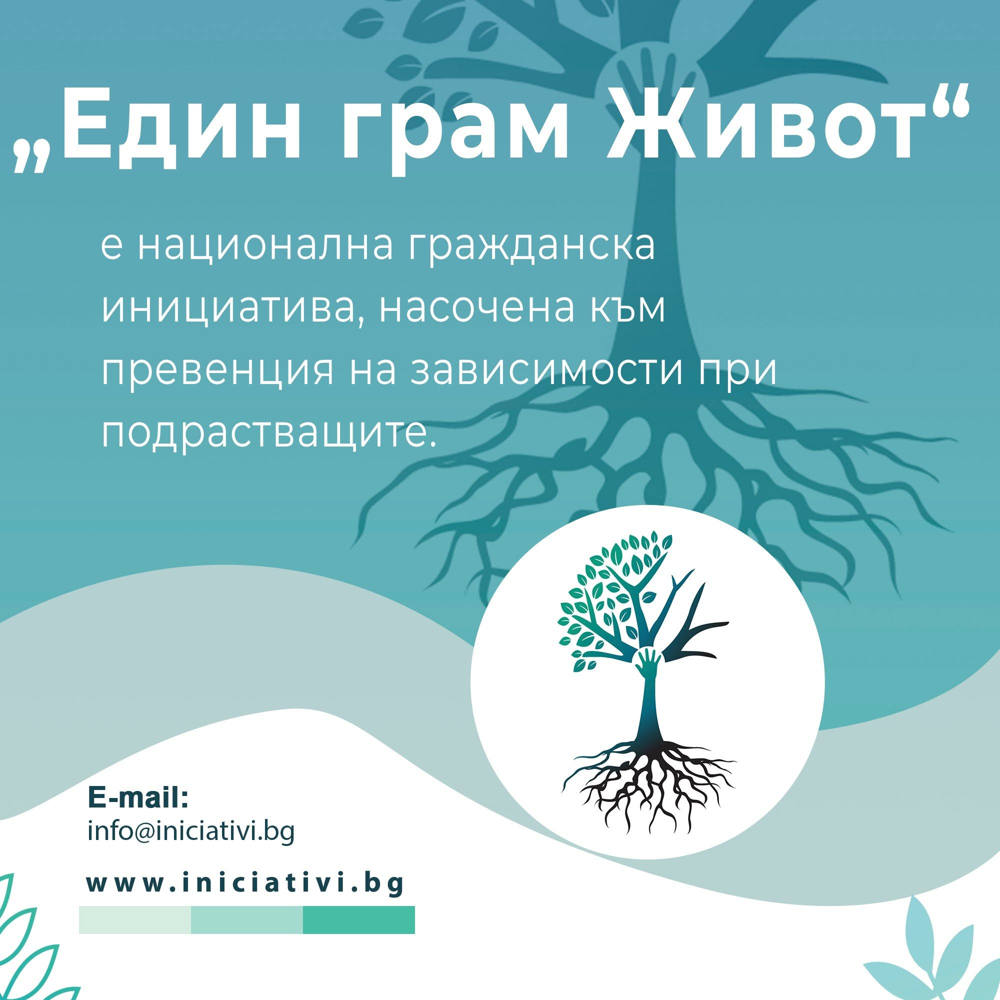
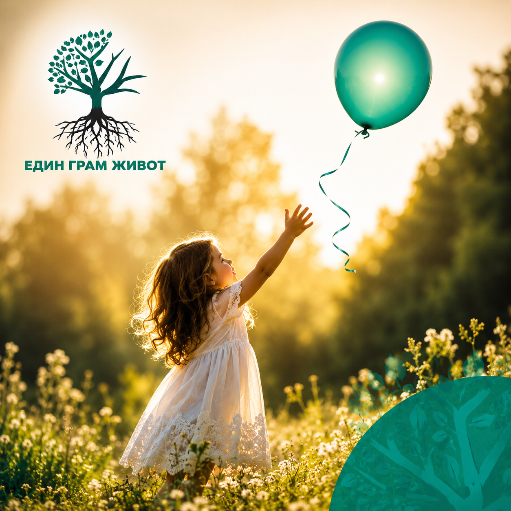
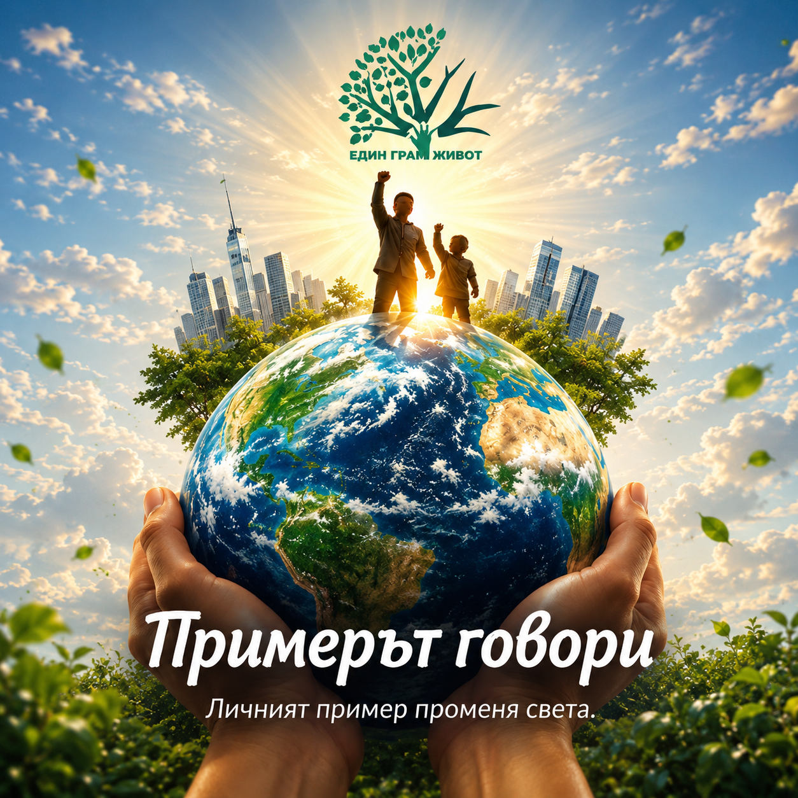
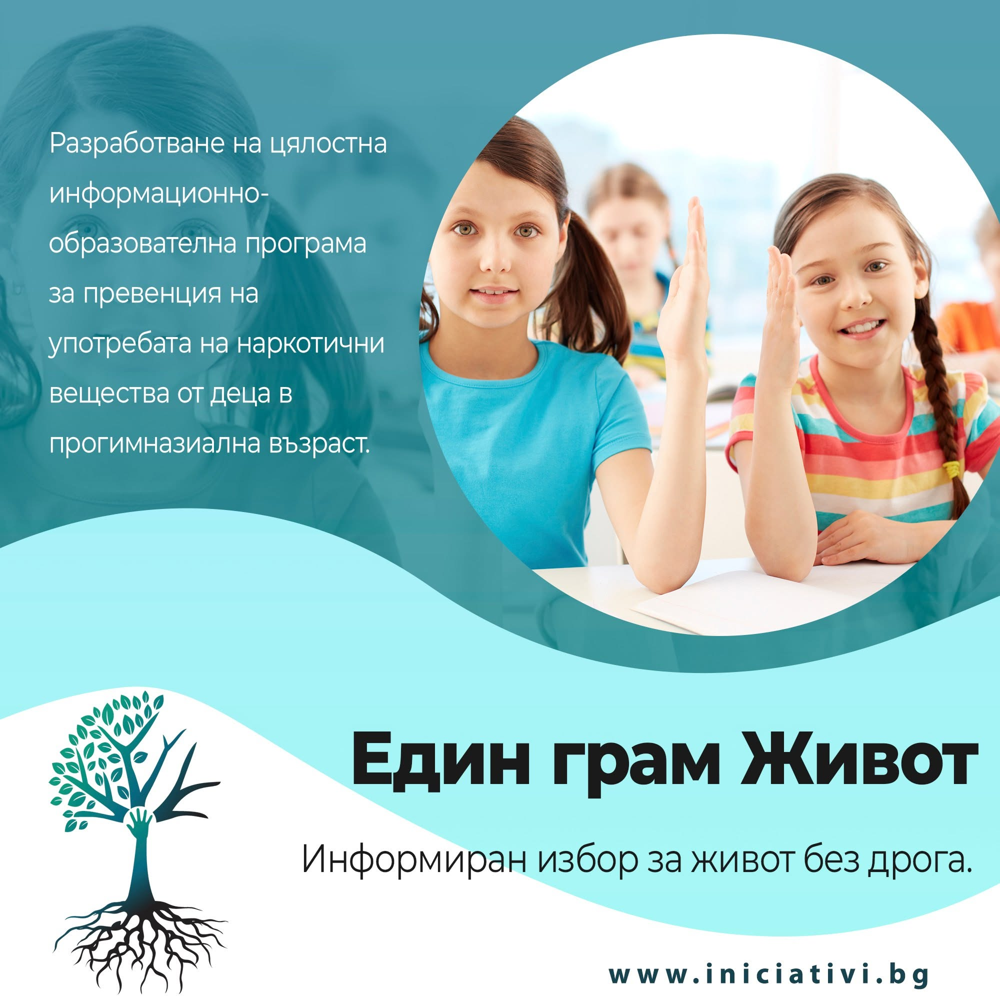

Programe
Module practice despre comunicare, reguli, limite și alegeri responsabile.
„Un Gram de Viață” lucrează cu copii, părinți și specialiști pentru a construi cunoaștere, încredere și reziliență înainte ca dependența să devină o problemă.
Descoperă programulPovestea noastră

„Un Gram de Viață” a început în 2021, când părinții au căutat răspunsul la întrebarea: cum îi pregătim pe copii înainte să se confrunte cu riscul?
Citește povestea
Programul este destinat claselor a V-a, a VI-a și începutului clasei a VII-a. Șapte module psihoeducaționale îi ajută pe copii și părinți să dezvolte responsabilitate, încredere și capacitatea de a face alegeri.
Vezi programul
Module practice despre comunicare, reguli, limite și alegeri responsabile.

Sport, creativitate și experiențe de familie.

Părinți, specialiști, organizații și instituții împreună.
Film inspirat din povești reale, care transformă tema copiilor, familiei și consecințelor unei alegeri într-o conversație publică.
Descoperă filmul →
Descoperă mesajele zilnice din seria „Un Gram de Viață”.
Vezi cele 100 de zileEste nevoie de părinți, școli, specialiști și comunități care să acționeze împreună.